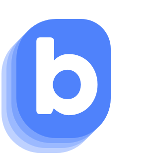

Jack Walters
Developer. Competitor.
Loves building software with his friends
Roles
- Rising Senior CS student at Johns Hopkins
- Co-founder and CTO of BundL
- Summer Software Developer at Fig - Food is Good
- Third baseman on the Johns Hopkins Baseball Team
Projects
- Sole developer of the BundL API - the backend that powers BundL. Currently provided cash back on over 335 transactions and $4,500 in transactions thus far.
- BundL Mobile App, the beta version of the iOS app.
- Product Recommendations for Fig - Food is Good. Exciting food item recommendations for people with dietary restrictions to discover.
- Developed the Plesi Mobile App with 4 other students. With the Plesi app, users can find local businesses and local owners can promote their businesses.
- Events Mobile App, my first iOS learning experience.
Tech Stack
- Strong: Javascript, Typescript, Node.js, Express, SQL, Postgres, Sequelize, Swift, Java
- Comfortable: Python, Pandas, HTML5, CSS, C/C++
- API's: Sendgrid, Stripe Payments, Firebase Javascript Admin SDK, Firebase Swift SDK, AWS S3, Segment, Amplitude
What I'm Reading / Interested in currently
- Coinbase blog article on transitioning from Native Development to React Native - I see a transition from Swift to React Native in BundL's future
- One of my all time favorite reads - Sam Hinkie resignation memo from the 76ers
- This piece on the future of brand loyalty and rewards
- Paul Graham's A Project of One's Own
- Specifically the quote: "Indeed, the mere expression "work/life" embodies a mistake: it assumes work and life are distinct. For those to whom the word "work" automatically implies the dutiful plodding kind, they are. But for the skaters, the relationship between work and life would be better represented by a dash than a slash. I wouldn't want to work on anything I didn't want to take over my life."
